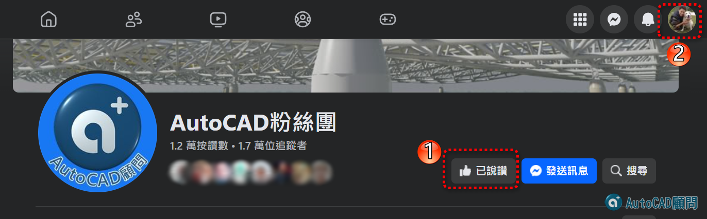

📢限時任務程式取得二步驟說明：
步驟1. 回覆文章提供 AutoCAD粉絲專頁(Facebook) 👉已說讚截圖(要有頭像)

步驟2. 回覆文章提供 蘋果爸愛分享(Youtube) 👉已訂閱截圖(要有頭像)
完成後我們會用顧問論壇私訊您下載網址(下載有期限要下要快，2024/10/09截止逾時不候)
🍎蘋果爸初衷致力於解決職場實務需求，終於可以一勞永逸解決這擾人的問題
😎請依照需求選擇適合的方式，有疑問歡迎提出來一起討論
👨🎓基礎方式:
1.下載掛入字體檔(shx)
2.SHX取代語法加入字體對映檔(fmp)
🧙♂️外掛方式:
1️⃣ ShxCheck指令：列出STYLE字型清單
2️⃣ ShxAddFmp-Auto指令：開檔自動換字體加fmp
3️⃣ ShxAddFmp指令：手動換字體加fmp
4️⃣ Qfmp指令：開啟字體對映檔(acad.fmp)
👇[贊助A分享]下載 自動取代SHX程式&加入fmp程式
https://www.autocad-tw.com/t29491-topic
👇[專屬B分享]下載 自動取代SHX程式&加入fmp程式
https://www.autocad-tw.com/t29489-topic
👇延伸閱讀
AutoCAD顧問教學_論壇服務
https://autocad-tw.1shop.tw/qm62pc
[互助]字體檔分享交流~
https://www.autocad-tw.com/t18145-topic
「知識」使用字體對映檔(acad.fmp)
https://www.autocad-tw.com/t110-topic
自動載入Lsp(Fas)程式 - APPLOAD指令